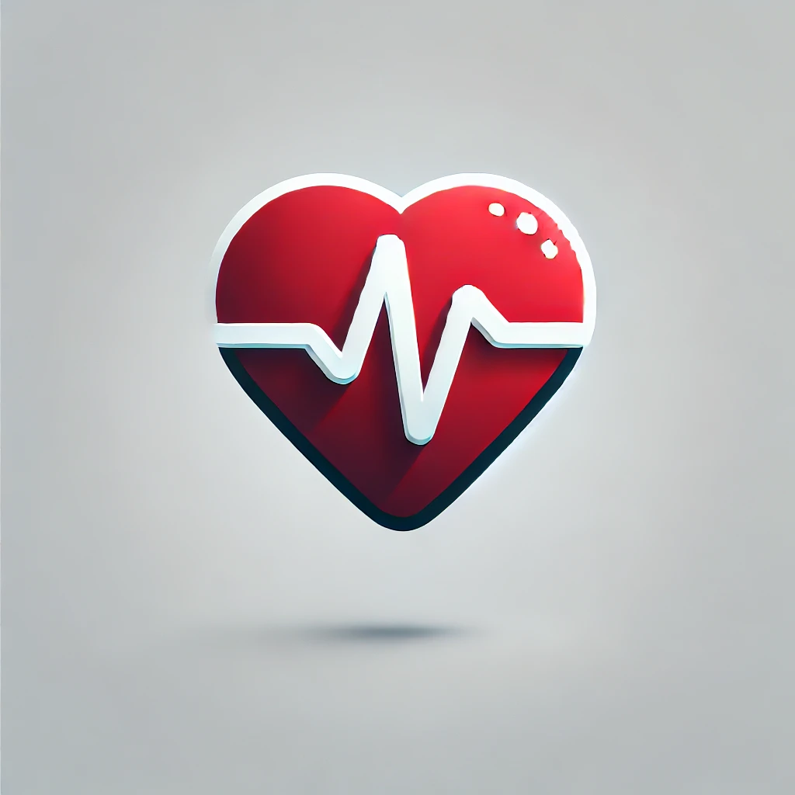

Nos Services
SantéTrack vous accompagne dans la gestion de votre santé grâce à une gamme de services adaptés à vos besoins.

Consultations en ligne
Des consultations avec des médecins spécialisés, directement depuis votre domicile.
Rappels pour médicaments
Recevez des notifications pour ne jamais oublier vos prises de médicaments.

Suivi de santé
Analysez vos données de santé pour mieux comprendre et gérer vos indicateurs.
Conseils personnalisés
Adoptez un mode de vie sain grâce à des recommandations adaptées à vos habitudes.